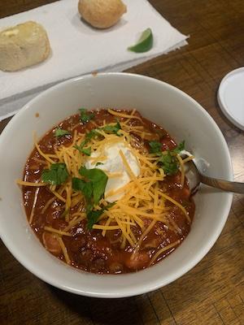

Spicy Habanero Chili

Chili
This spicy dish of chili will heat you up on a chilly day.
Ingredients
- 3 lbs sirloin steak cut up 1/2 cubes
- 3 cloves garlic minced
- 1 green pepper chopped
- 3 to 5 jalapeños chopped
- 1 to 2 habanero chopped
- 1 poblano pepper chopped
- 1 to 2 habanero chopped
- 1 medium sweet onion chopped
- 1/2 cup beer
- 1/4 cup chili powder
- 1 teaspoon black pepper
- 1 tablespoon cumin
- 3 tablespoons brown sugar
- 4 15oz cans tomato sauce
- 2 15oz cans pinto beans
- 2 15oz cans black beans
- 2 15oz cans kidney beans
Steps
- Brown cubed sirloin in a 4 quart pot.
- Stir in chopped peppers onion and garlic.
- Simmer stirring occasionally for 5 to 10 minutes.
- Add beer, stir in chili powder, black pepper, cumin, and brown sugar.
- Bring back up to simmer stirring occasionally for 5 to 10 minutes.
- Add tomato sauce, and drained - rinsed beans.
- Bring back up to Simmer stirring occasionally for approximately 30 minutes.
- Optional - Serve with shredded cheese, sour cream, and fresh chopped cilantro as toppings.